Аудит сайтов Versailles Clinic и Blavo Music
Дата проверки: 20.08.2026. Проверка выполнена в Chrome на ширинах 390 и 1440 px. Ниже собраны простые замечания, технические симптомы и скриншоты.
Главные страницы, каталог/цены, контакты, sitemap Blavo, ссылки приложений.
Android-приложение BlavoMusic установлено из Google Play и запущено на iMac AVD; iOS App Store-сборка в Simulator по-прежнему не устанавливается.
audit.json и PNG-скриншоты лежат рядом с этим HTML.Главные выводы
Blavo Music
- RuStore ведет на главную
rustore.ru, а не на карточку приложения. - Fixed-плеер перекрывает каталог, футер и контакты.
- У гостя идут 401-запросы к
/api/v1/profile/informationи/api/v1/finance. /sitemapвыглядит почти пустым и не похож на полноценную карту сайта.- Есть серые placeholder-карточки вместо обложек.
Versailles Clinic
- На главной видны пустые серые блоки в слайдерах/карточках.
- Пункт меню “Цены” проверен: на ключевых страницах он ведет на рабочий URL
/price/. 404 на/pricesбыл ручной контрольной проверкой неверного адреса; перехода на него с сайта не найдено. - Cookie-плашка и плавающая онлайн-запись перегружают mobile-экран.
- Сторонний ресурс
hdrc.yandex.netпадает сERR_CERT_AUTHORITY_INVALID.
Приложения
- App Store: https://apps.apple.com/ru/app/blavomusic/id6744443926 - 200.
- Google Play: https://play.google.com/store/apps/details?id=ru.blavomusic&hl=ru - 200.
- AppGallery: https://appgallery.huawei.com/app/C118072157 - 200.
- RuStore: https://www.rustore.ru/ - технически 200, но ссылка неправильная для приложения.
APK напрямую с Google Play официально не скачивается обычной ссылкой. Реальная проверка Android-приложения делается на Android Emulator/устройстве с Google Play через установку из Play Store, либо через APK/AAB/исходники. Для iOS Simulator App Store-сборка не подходит: нужна simulator build из Xcode или реальное устройство.
Проверка iMac / Android Emulator
Что найдено
- SSH через
ser@sers-iMac.localработает; прямой192.168.0.101не ответил. - На старом AVD
codex_probe_api35действительно установлен Авито:com.avito.android, версия229.1. Этот AVD был на образеgoogle_apis; пакетcom.android.vendingтам былLicenseChecker.apk, не полноценный Play Store UI. - Установлен новый Play Store image:
system-images;android-35;google_apis_playstore;arm64-v8a. - Создан и запущен отдельный AVD
blavo_play_api35наemulator-5556. - В новом AVD настоящий Google Play найден как
/product/priv-app/Phonesky/Phonesky.apk.
Текущий блокер
Google Play открылся, но требует вход в Google-аккаунт. Без авторизации карточка BlavoMusic и установка из Play Store недоступны. После входа можно открыть market://details?id=ru.blavomusic, установить приложение и затем снять APK через adb shell pm path ru.blavomusic + adb pull.
{kind=link}
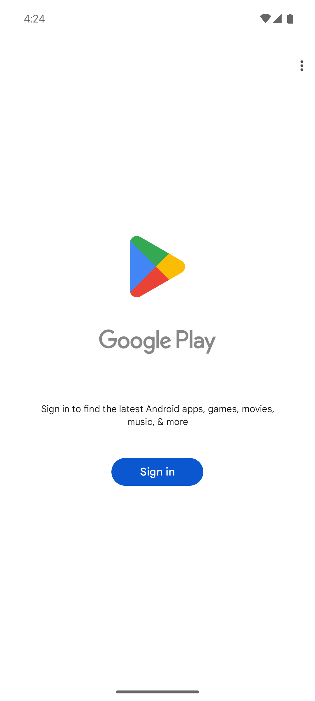
Уточнение по 404 Versailles
В первой версии отчета был указан URL https://versailles.clinic/prices как 404. После проверки источника перехода выяснено: это не ссылка из интерфейса сайта, а мой ручной проверочный URL. На главной, “О клинике”, “Контакты”, “Врачи”, “Цены”, “Отзывы” и “Акции” ссылка “Цены” ведет на https://versailles.clinic/price/, и sitemap также содержит /price/, а не /prices. Поэтому это не подтвержденный баг навигации; максимум можно поставить 301-редирект /prices → /price/ для защиты от внешних/старых ссылок.
CMS и публичные следы разработчика Versailles
CMS
- Сайт
versailles.clinicработает на 1C-Bitrix / Bitrix Site Manager: сервер отдает HTTP-заголовокx-powered-cms: Bitrix Site Manager. - Точная версия Bitrix в публичных заголовках, HTML главной, странице авторизации
/bitrix/admin/и доступных JS/CSS-файлах не раскрыта. Видны только даты/кэширующие параметры файлов, напримерcore.min.js?1743181356...; это не номер версии CMS. - Дополнительные признаки Bitrix: доступна страница авторизации
/bitrix/admin/, в/robots.txtзакрыт/bitrix/и разрешены типовые директории/bitrix/components/,/bitrix/cache/,/bitrix/js/,/bitrix/templates/,/bitrix/panel/. - Основной шаблон/ассеты подключаются из
/local/templates/versalles/и/assets/.
Разработчик / владелец
- В публичном HTML главной, комментариях страницы и загруженных CSS/JS не найдено подписи студии, имени разработчика или агентства.
- В schema.org
author/publisherуказан не разработчик, а организацияКлиника Versailles. - На правовых страницах оператором/администратором сайта указано
ООО «РОЙАЛМЕД». Это юридический владелец/оператор, не подтвержденный подрядчик разработки. - В
/terms-of-use/,/privacy/и/cookies/сохранились ссылки и почта старого доменаversalles-beauty.ru; это похоже на наследие прежней версии сайта и требует правки юридических текстов.
Явные косяки Versailles
- Раскрываются технические заголовки:
x-powered-by: PHP/8.1.32иx-powered-cms: Bitrix Site Manager. Это не ломает сайт само по себе, но ухудшает security hygiene. - На 403-странице шаблона
/local/templates/versalles/раскрывается backend-серверApache/2.4.63 (Unix), хотя основной ответ идет черезnginx-reuseport. Лучше закрыть server signature. - Юридические страницы содержат старый домен
versalles-beauty.ruи старые адреса в текстах. Это уже пользовательский/юридический дефект. /robots.txtраскрывает внутренний admin URL/bitrix/admin/seo_sitemap.php?PAGEN_1=1&SIZEN_1=20&lang=ru. Низкая критичность, но выглядит неаккуратно.- На главной остаются пустые серые блоки в слайдерах/карточках, а на mobile cookie-плашка вместе с плавающей записью перегружает первый экран.
- Сторонний ресурс
https://hdrc.yandex.net/падает сERR_CERT_AUTHORITY_INVALIDв браузерной проверке.
Android-приложение BlavoMusic
Установка
- На iMac установлен Play Store image и создан AVD
blavo_play_api35. - Google Play авторизован после 2FA.
- BlavoMusic установлен из Google Play.
- Package:
ru.blavomusic - Version:
1.0.35, versionCode13, targetSdk36. - APK/splits сохранены в
audit-output/blavo-apk/.
Замечания
- Первый onboarding-текст выглядит как черновой/машинный: “Есть над чем задуматься: реплицированные с зарубежных источников...”
- Onboarding длинный: после серии экранов начинается анкета, без ответа кнопка “Далее” не продвигает пользователя.
- В каталоге длинные названия карточек сильно обрезаются, местами дублируются в данных.
- На детальной странице очень длинный заголовок повторяется дважды подряд: “...не помогают?Как избавиться...”
- Нижняя навигация читаемая, основной каталог после анкеты доступен.
{kind=link}
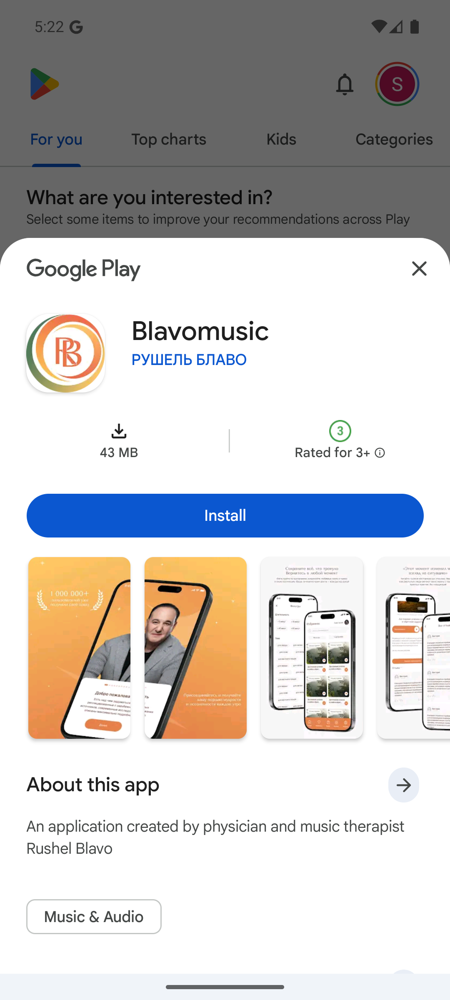
{kind=link}
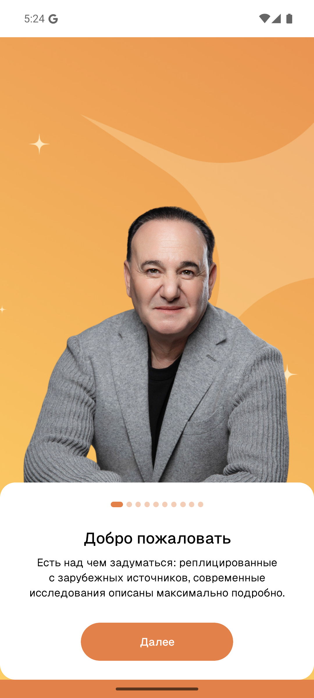
{kind=link}
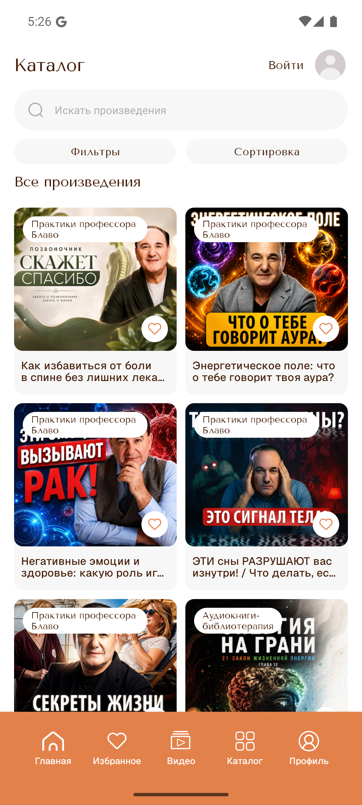
{kind=link}
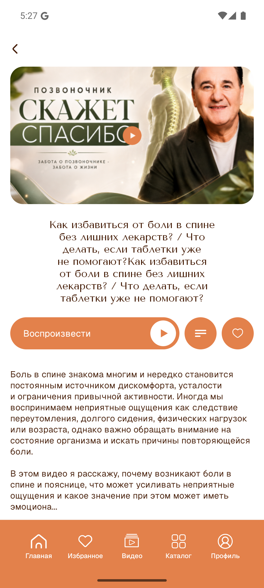
Offline-поведение Android
Вывод
- После отключения сети на эмуляторе приложение не показывает полноценные mock/API-данные анкеты.
- После
pm clear ru.blavomusicи запуска без интернета отображается первый локальный intro-слайд с портретом и кнопкойДалее. Это похоже на bundled assets, а не на mock ответа/surveys/welcome. - После нескольких нажатий
Далееприложение остается на почти пустом intro-слайде: фон, индикатор и кнопка, но без текста/персонажа/ошибки сети. До вопросов welcome-анкеты offline не дошло. - Пользователю не объясняется, что нет интернета; нормальный fallback должен показать понятную ошибку, кнопку повтора и/или заранее сохраненную анкету.
Проверка
- Сеть отключалась через Android airplane mode и
svc wifi/data disable; проверкаping 8.8.8.8внутри эмулятора далаNetwork is unreachable. - После теста сеть восстановлена;
ping_restoredподтвержден.
{kind=link}
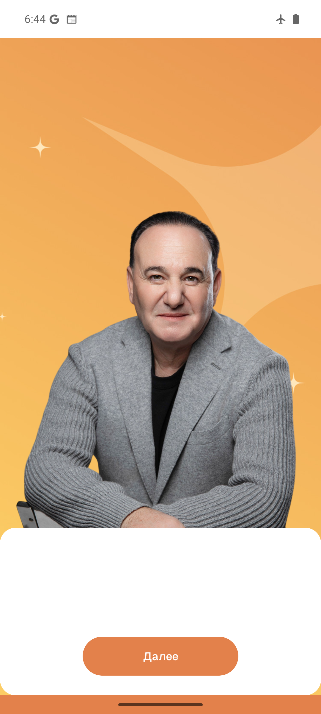
{kind=link}
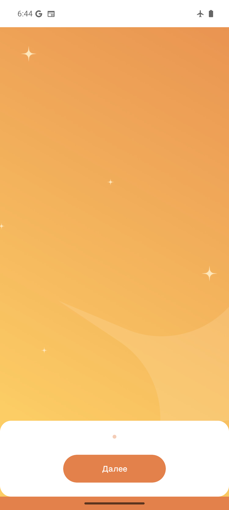
Сетевые обращения Android APK
Подтверждено
- APK содержит Hermes bytecode v96 в
assets/index.android.bundle;hermescиз React Native 0.81.5 успешно сделал bytecode dump. - В bytecode явно найдена база API
https://blavomusic.ru/api/v1, VK redirecthttps://blavomusic.ru/auth/vk/redirect?mob=1, policy URLhttps://blavomusic.ru/public/policy.pdfи Firebase Storage bucketblavomusic-a6b8e.firebasestorage.app. - При запуске приложения logcat показывает инициализацию Firebase и сетевые запросы от UID приложения
10207. - На каталожном экране Glide фактически загружает изображения с
https://cdn2.blavomusic.ru/rushel/products/.../*.webp; это подтверждает обращение приложения к CDN Blavo.
Известные API endpoints
/product//favorite,/favorite/toggle,/favorite?page=/finance,/finance/card,/finance/cards,/finance/change,/finance/transactions,/finance/unsub,/finance/check?transaction=/profile,/profile/faq,/profile/feedback,/profile/logout/profile/information,/profile/information/update,/profile/information/agreement,/profile/information/change-email,/profile/information/change-phone,/profile/information/check-email,/profile/information/check-phone,/profile/information/image,/profile/information/set-password/profile/listened?page=,/profile/listened?paginate=16,/profile/notification/devices/subscribe/radio,/radio?page=/review?product_id=/surveys/welcome
Риски и косяки
- В release-сборке в
ReactNativeJSлогируется содержимое onboarding-анкеты целиком: id, slug, вопросы, ответы, timestamps. Это лишние runtime-логи, их стоит убрать. - В bytecode видны вспомогательные функции API-слоя:
userSocialInput,userUpdate,userAnswersInput,favoriteInput,requestIosMp3. Это не секреты, но подтверждает структуру клиентского API. - При тесте с proxy-перехватом без установленного CA запросы приложения падали как
Network request failed. Поэтому тела HTTPS-запросов не расшифровывались; для payload/header проверки нужен debug build с доверенным CA/Charles/mitmproxy или server-side access logs.
Тест API endpoints
Что отвечает без авторизации
- Проверка выполнена 20.08.2026 через
curlбез токена, сAccept: application/json. GET /surveys/welcome-200 application/json, возвращает onboarding-анкету.GET /review?product_id=1-200 application/json, возвращает список отзывов.GET /review?product_id=99-200 application/json, пустой список.GET /review?product_id=999999-422 application/json, validation errorvalidation.exists.
Закрытые чтения
- С
Accept: application/jsonзащищенные endpoints корректно отвечают401 {"message":"Unauthenticated."}:/favorite,/finance,/finance/cards,/finance/transactions,/finance/check,/profile/faq,/profile/information,/profile/listened,/radio. - Без
Accept: application/jsonте же защищенные чтения часто возвращают HTML500 Server Errorвместо аккуратного401. Это явный backend/API косяк обработки ошибок для не-JSON клиентов. GET /product/возвращает404;GET /product/1,/product/99,/product/100тоже404с сообщением Laravel-моделиModules\Product\Models\Product, что раскрывает внутреннее имя класса.
Методы изменения
- Рабочие
POST/DELETEбез payload не отправлялись, чтобы не создавать побочные действия в продакшене. OPTIONSпоказываетPOSTдля/favorite/toggle,/finance/change,/finance/unsub,/profile/feedback,/profile/logout,/profile/information/update,/profile/information/agreement,/profile/information/change-email,/profile/information/change-phone,/profile/information/check-email,/profile/information/check-phone,/profile/information/image,/profile/information/set-password,/profile/notification/devices/subscribe.OPTIONSпоказываетDELETEдля/finance/cardи/profile.- Для полной проверки payload/header нужен тестовый аккаунт или staging/debug build; публичный гостевой тест уже показывает базовую карту методов и ошибки negotiation.
Embedded Expo config в APK
iOS-конфиг
- В Android APK лежит общий Expo
assets/app.config, и в нем есть iOS-секция. Это не IPA и не iOS-бинарник, но часть iOS-настроек проекта попала в Android-сборку. - Найдены:
bundleIdentifier: ru.blavomusic,buildNumber: 9,supportsTablet: true. infoPlist:UIBackgroundModes= audio/processing,BGTaskSchedulerPermittedIdentifiers=ru.blavomusic.task,ITSAppUsesNonExemptEncryption: false, регион/локализацияru.- Также виден Expo/EAS projectId:
1ecba514-2032-47cc-8e8d-69a3d55ae496.
Чувствительный Android-конфиг
- В том же
app.configприсутствует Androidkeystoreblock: путь keystore, alias и поля паролей. Значения в отчет не вынесены намеренно. - Это нужно считать утечкой чувствительной build/signing-информации: убрать signing config из embedded Expo config, пересобрать приложение и при необходимости перевыпустить/ротировать Android signing credentials по фактическому риску.
Таблица проверок
| Экран | Страница | HTTP | Title | Гор. скролл | Ошибки/симптомы |
|---|---|---|---|---|---|
| mobile | versailles-home | 200 | Премиум клиника медицинской косметологии Versailles | нет | net::ERR_CERT_AUTHORITY_INVALID: https://hdrc.yandex.net/<br>net::ERR_ABORTED: https://privacy-cs.mail.ru/fp/?id=9TTx7RnuSbvoyCbZDtfM3 |
| mobile | versailles-contacts | 200 | Контакты клиники Versailles в Санкт-Петербурге | нет | net::ERR_ABORTED: https://privacy-cs.mail.ru/fp/?id=jlhGf3zpmqTWMKpbdGjwq<br>net::ERR_CERT_AUTHORITY_INVALID: https://hdrc.yandex.net/ |
| mobile | blavomusic-home | 200 | Музыка для медитации и релаксации онлайн | Blavo Music | нет | 5 гостевых 401 net::ERR_ABORTED: https://blavomusic.ru/ |
| mobile | blavomusic-catalog | 200 | Каталог музыки для медитации и релаксации | Blavo Music | нет | 5 гостевых 401 net::ERR_CERT_AUTHORITY_INVALID: https://hdrc.yandex.net/ |
| mobile | blavomusic-contacts | 200 | Контакты Blavo Music | Центр Рушеля Блаво | нет | 3 гостевых 401 net::ERR_ABORTED: https://yandex.ru/map-widget/v1/?um=constructor%3A96043c9ab268f53e0a720a2ca91011f7289f8990b085ca34dd6881a6b5e6c1d5&source=constructor&ll=55.710568,37.65582&z=4326<br>net::ERR_ABORTED: https://yandex.ru/map-widget/v1/?um=constructor%3A96043c9ab268f53e0a720a2ca91011f7289f8990b085ca34dd6881a6b5e6c1d5&source=constructor&ll=55.710568,37.65582&z=4326 |
| mobile | blavomusic-sitemap | 200 | Музыка для медитации, релаксации и внутренней гармонии | нет | 1 гостевых 401 net::ERR_CERT_AUTHORITY_INVALID: https://hdrc.yandex.net/<br>net::ERR_ABORTED: https://blavomusic.ru/sitemap |
| desktop | versailles-home | 200 | Премиум клиника медицинской косметологии Versailles | нет | net::ERR_ABORTED: https://privacy-cs.mail.ru/fp/?id=Y7hjISkb8nv7qMYmmfXhr<br>net::ERR_ABORTED: https://privacy-cs.mail.ru/fp/?id=Y7hjISkb8nv7qMYmmfXhr |
| desktop | versailles-contacts | 200 | Контакты клиники Versailles в Санкт-Петербурге | нет | net::ERR_CERT_AUTHORITY_INVALID: https://hdrc.yandex.net/<br>net::ERR_ABORTED: https://privacy-cs.mail.ru/fp/?id=jdbsMEo6pWzhkLAPU0uwQ |
| desktop | blavomusic-home | 200 | Музыка для медитации и релаксации онлайн | Blavo Music | нет | 5 гостевых 401 net::ERR_ABORTED: https://blavomusic.ru/<br>net::ERR_ABORTED: https://blavomusic.ru/ |
| desktop | blavomusic-catalog | 200 | Каталог музыки для медитации и релаксации | Blavo Music | нет | 5 гостевых 401 net::ERR_ABORTED: https://blavomusic.ru/catalog<br>net::ERR_ABORTED: https://blavomusic.ru/catalog |
| desktop | blavomusic-contacts | 200 | Контакты Blavo Music | Центр Рушеля Блаво | нет | 3 гостевых 401 net::ERR_ABORTED: https://yandex.ru/map-widget/v1/?um=constructor%3A96043c9ab268f53e0a720a2ca91011f7289f8990b085ca34dd6881a6b5e6c1d5&source=constructor&ll=55.710568,37.65582&z=4326<br>net::ERR_ABORTED: https://yandex.ru/map-widget/v1/?um=constructor%3A96043c9ab268f53e0a720a2ca91011f7289f8990b085ca34dd6881a6b5e6c1d5&source=constructor&ll=55.710568,37.65582&z=4326 |
| desktop | blavomusic-sitemap | 200 | Музыка для медитации, релаксации и внутренней гармонии | нет | 3 гостевых 401 net::ERR_ABORTED: https://blavomusic.ru/sitemap<br>net::ERR_CERT_AUTHORITY_INVALID: https://hdrc.yandex.net/ |
Скриншоты
{kind=link}
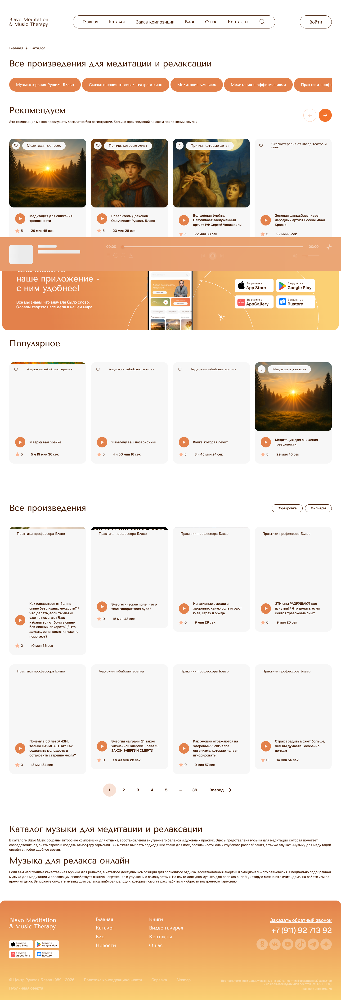
{kind=link}
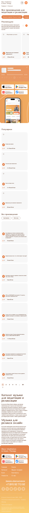
{kind=link}
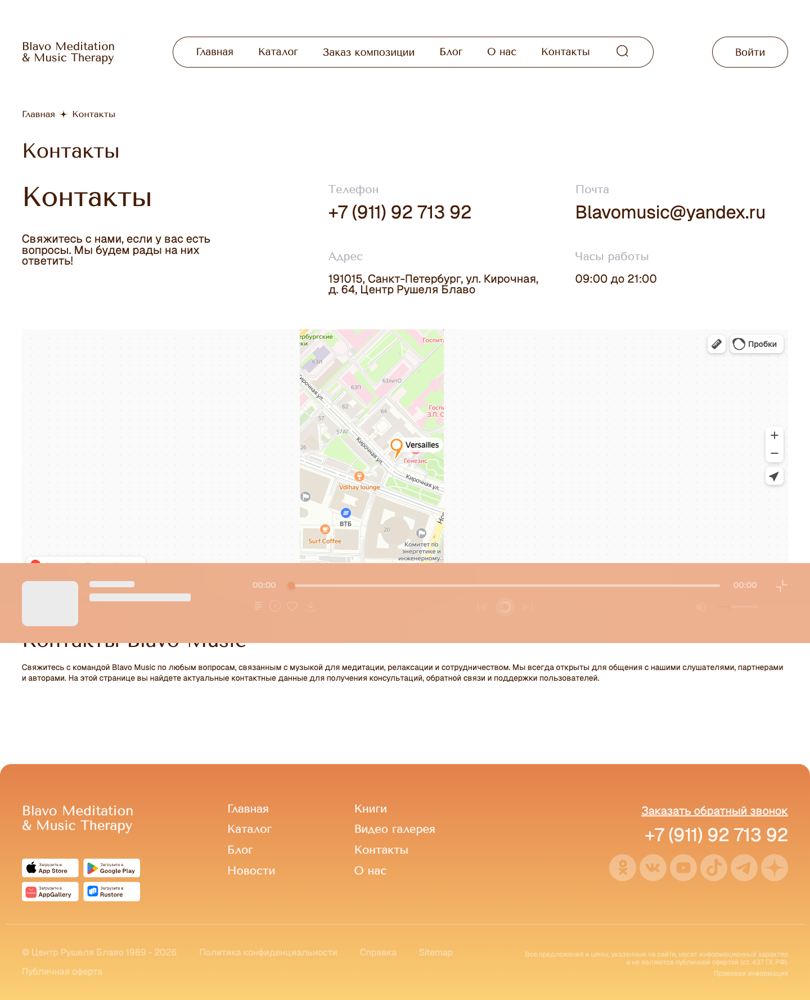
{kind=link}
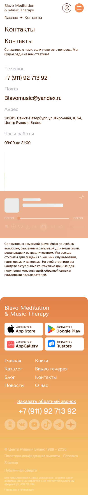

{kind=link}
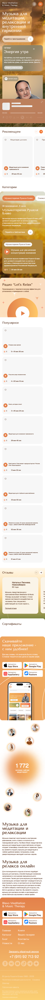
{kind=link}
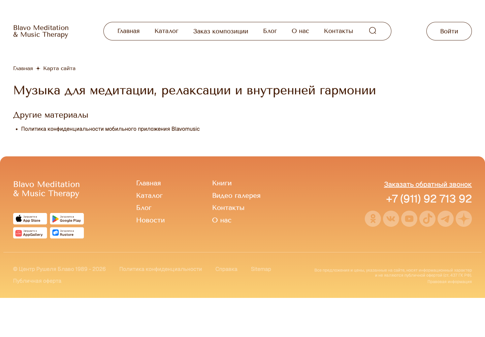
{kind=link}
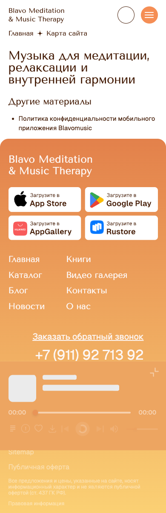
{kind=link}
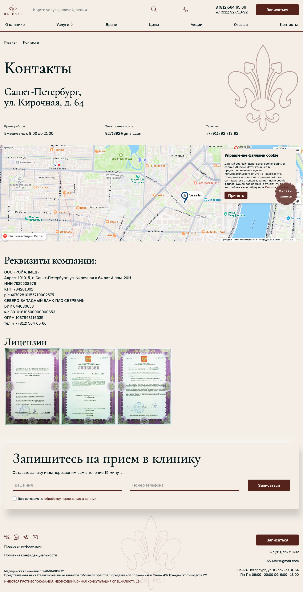
{kind=link}
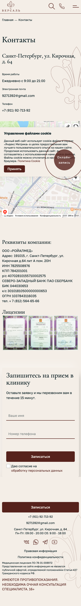
{kind=link}
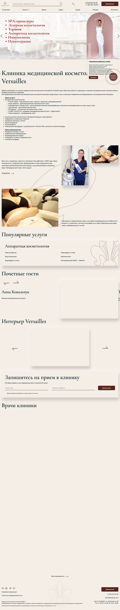
{kind=link}
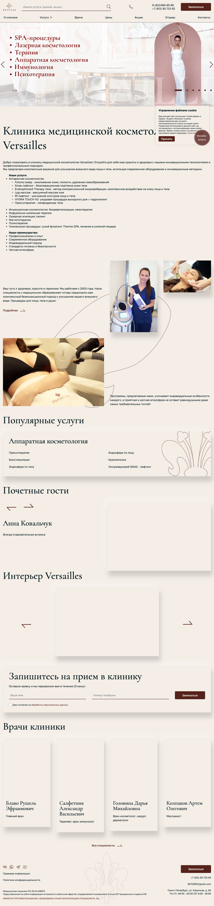
{kind=link}
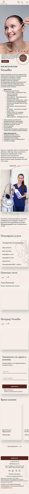
{kind=link}
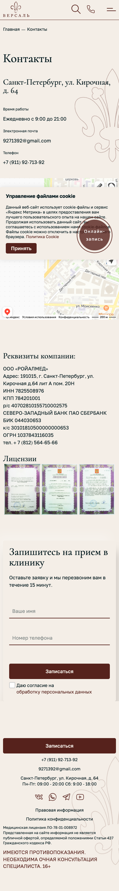
{kind=link}
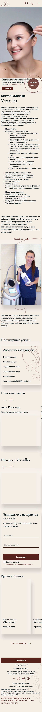
{kind=link}
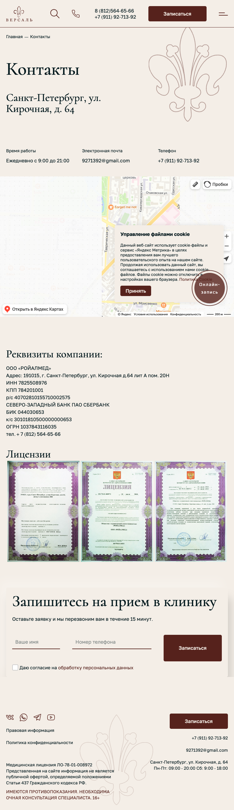
{kind=link}
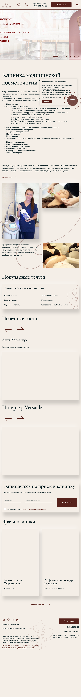
{kind=link}
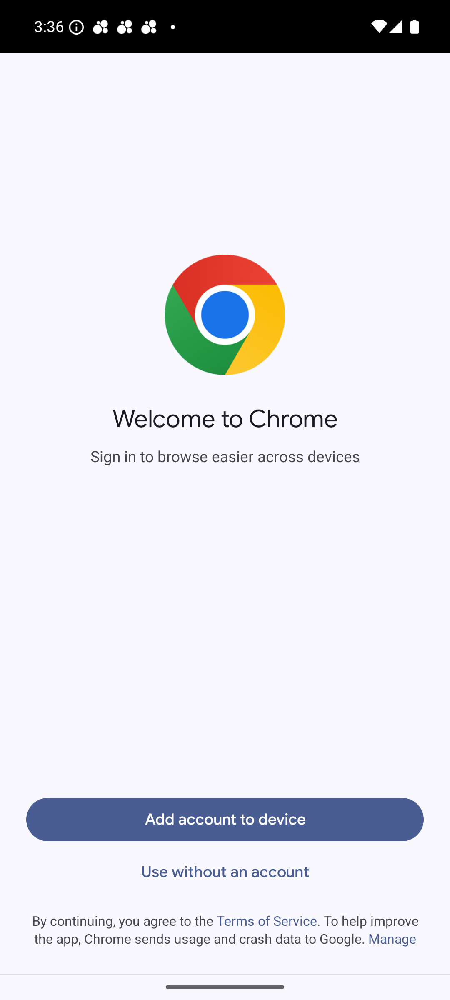
{kind=link}
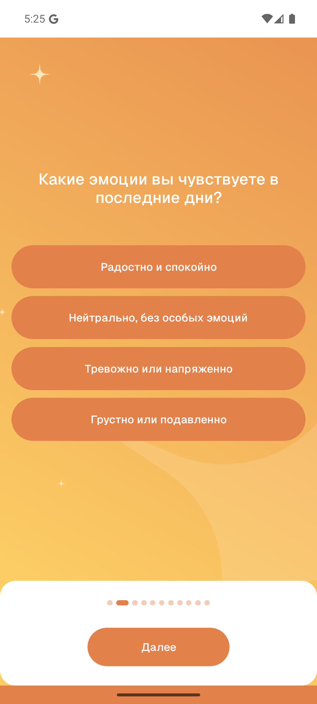
{kind=link}
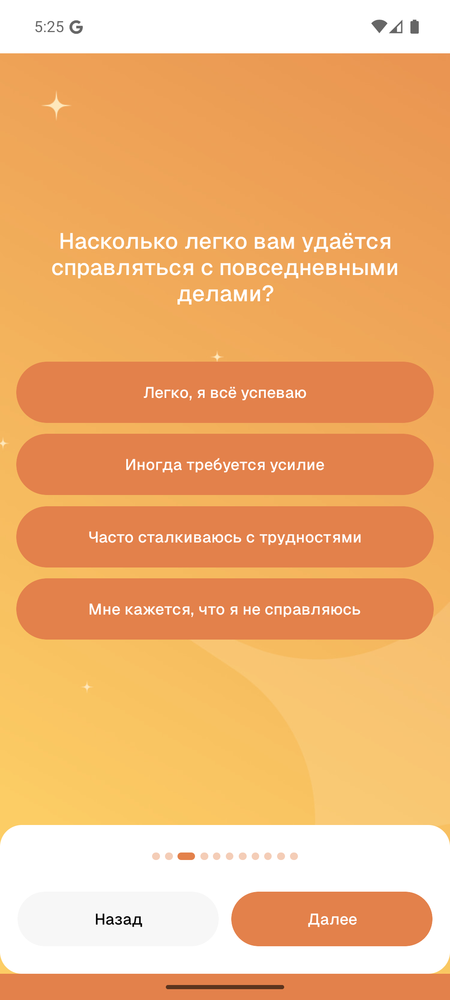
{kind=link}
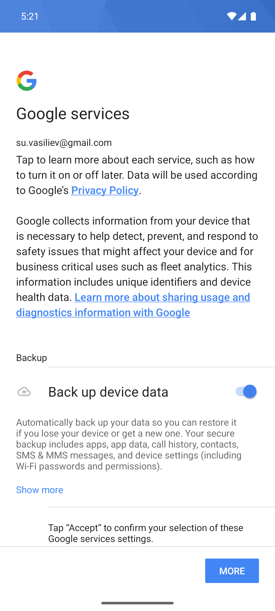
{kind=link}
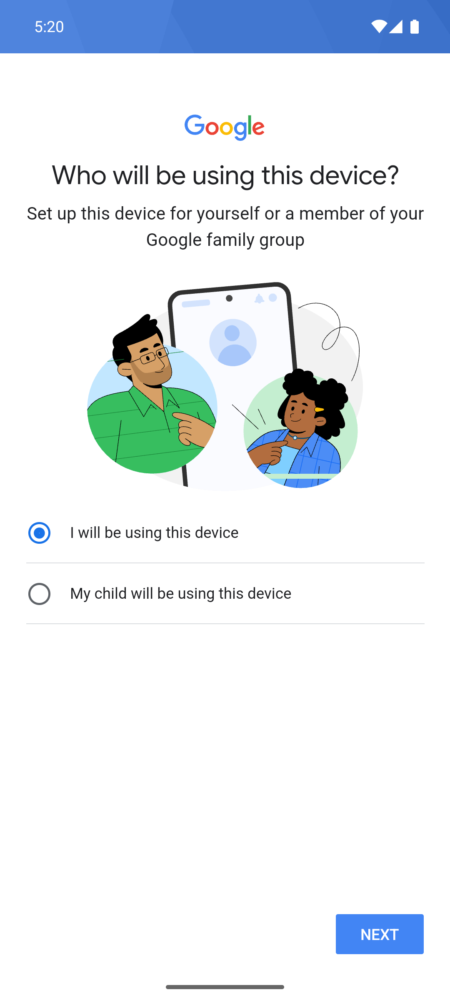
Сырые данные автоматической проверки: audit.json.